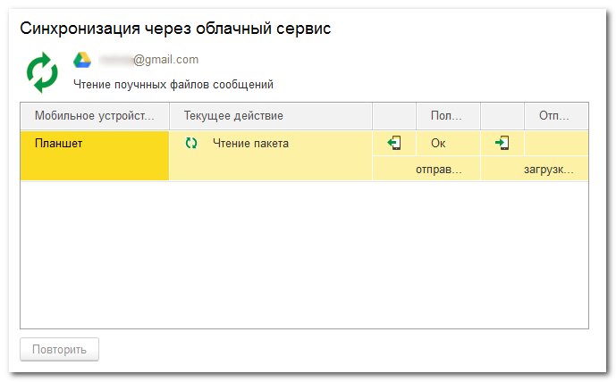

Форма интерактивной синхронизации с мобильными приложениями через облачный сервис

Синхронизация начинается сразу при открытии формы. В списке отображаются устройства, зарегистрированные во вспомогательном файле списка устройств, полученном из облака. Для каждого устройства отображается текущее действие и результат обмена.
Для прекращения синхронизации просто закройте эту форму и подтвердите прекращение синхронизации в запросе программы.
Кнопка Повторить становится доступной после завершения обмена файлами со всеми устройствами и предназначена для выполнения повторной синхронизации.
Общее описание синхронизации, Использование домашней сети, Установка веб-расширения, Установка веб-сервера, Публикация на веб-сервере